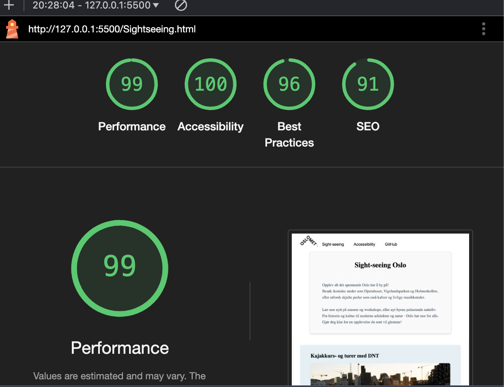

Usability og Accesiblitiy
Hovedmålet vårt for dette nettstedet var å gjøre det brukbart for så bredt publikum som mulig. Vi implementerte et enkelt og lettlest design og gjennomførte automatiserte tilgjengelighetstester gjennom hele utviklingsprosessen for å forbedre tilgjengeligheten. Viktige verktøy vi brukte inkluderte: Lighthouse ,og, Wave. Sistnevnte var spesielt verdifull, da den ga innsiktsfulle retningslinjer om både våre vellykkede og mindre effektive praksiser. Informasjonssiden om universell utforming var særlig relevant, da den knyttet seg til personer som står overfor ulike utfordringer, og hjalp oss med å forstå bedre hvilke tilpasninger som var nødvendige.